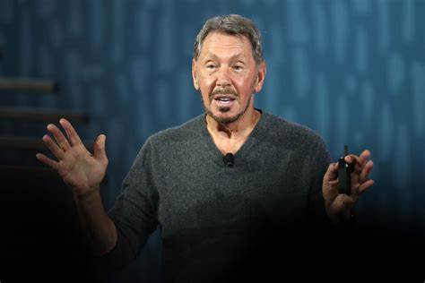

Height and Width
6. Larry Ellison Larry Ellison 5. Larry Ellison ($48 Billion) REUTERS The
CTO and Founder of Oracle welcomes the new year with a net worth of $103.8
B. In 2021, Oracle made its biggest acquisition, buying the electronic
health records company Cerner for $28.3 billion. Ellison also sat on the
board of Tesla until August 2022, and he still owns 15 million shares. In
October, he was the biggest dollar gainer, according to Forbes, bouncing
back from disappointing earnings in August following layoff announcements.
In this min and max height is used where width is constant. Min height
is the fixed height and max height tells upto which height the div will
expand.
6. Larry Ellison Larry Ellison 5. Larry Ellison ($48 Billion) REUTERS The
CTO and Founder of Oracle welcomes the new year with a net worth of $103.8
B. In 2021, Oracle made its biggest acquisition, buying the electronic
health records company Cerner for $28.3 billion. Ellison also sat on the
board of Tesla until August 2022, and he still owns 15 million shares. In
October, he was the biggest dollar gainer, according to Forbes, bouncing
back from disappointing earnings in August following layoff announcements.
In this min and max width is used and height is constant . So, on
increase or decrease of content width will increse or decrease upto it's
min and max height.

In the 3rd div width is given .